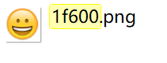

Guide

特色功能
组件截图
使用下面的方法可以实现对组件截图的功能。原理是使用FairyGUI提供的绘画模式功能。API是：
|
requestorId请求者id。当多个请求要求显示对象进入绘画模式时，可以用这个id区分。取值是1、2、4、8、16以此类推。1024内内部保留。用户自定义的id从1024开始。margin纹理四周的留空。如果特殊处理后的内容大于原内容，那么这里的设置可以使纹理扩大。
利用绘画模式实现截图功能：
|
表情显示和输入
FairyGUI支持表情显示和直接输入，即表情图片直接在输入状态下就显示在输入框中。例如：

使用办法是为富文本或者输入文本定义emojies集合。
|
每个表情对应一个Unicode编码。表情的来源有两种，一是自定义的表情，另外是手机键盘上自带的表情。
对于自定义的表情，你可以用任意字符作为表情的代码，可以选取一些几乎不会被用户直接输入的字符。
对于手机键盘上的表情，一般是使用UCS32编码，即4个字节的Unicode编码。这和我们通常使用的UTF8或者UCS16不同。一般我们在代码里使用的字符，无论是英文还是中文，都可以使用一个char表达，但4字节的Unicode编码在C#需要两个char表达，称为Surrogate Pair。丢掉任何一个char都会造成编码错误。
例如Unicode编码0x1f600对应的表情为：
注册这个表情：
|
IOS上常用的Unicode编码和表情图片资源可以从这里下载：http://res.fairygui.com/ios-emoji.zip
需要注意，0x1f600的Unicode编码在C#里是用两个char表达，即”\U0001f600”，但不代表这两个char的整数值是0x1和0xf600。如果需要对含UCS32编码的文本进行网络传输或者数据库保存，需要确保你的网络层或者数据库接口支持这种编码。可以百度获得这种编码的详细处理方式，关键字是“ios 表情编码”。
UGUI自带的文字组件没有表情的处理，所以Unity屏蔽了表情的输入。如果要打开这个功能，需要修改Xcode项目下/Classes/UI/Keyboard.mm文件，将FILTER_EMOJIS_IOS_KEYBOARD宏修改为0。
自定义滤镜
待补充。。。